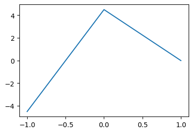
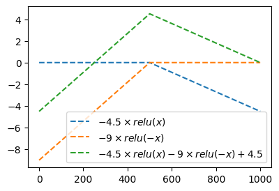
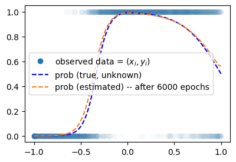

# {{<video https://youtu.be/playlist?list=PLQqh36zP38-zH5ftAQumLjMjKH69uq1B2&si=Pxq4dj0iWcY1zkM0 >}}04wk-1: (신경망) – 로지스틱의 한계 극복

1. 강의영상
2. Imports
import torch
import matplotlib.pyplot as plt
import pandas as pdplt.rcParams['figure.figsize'] = (4.5, 3.0)3. 꺽인그래프를 만드는 방법
지난시간복습
# 오늘의 잔소리..
## 회귀(카페예제): yhat=직선=linr(x), 정규분포, MSEloss
## 로지스틱(정상취업): yhat=곡선=sig(직선)=sig(linr(x)), 베르누이, BCELoss
## 이름없음(비정상취업): yhat=꺽인곡선=sig(꺽인직선)=sig(??), 베르누이, ??- 로지스틱의 한계를 극복하기 위해서는 시그모이드를 취하기 전에 꺽인 그래프 모양을 만드는 기술이 있어야겠음.
- 아래와 같은 벡터 \({\bf x}\)를 가정하자.
x = torch.linspace(-1,1,1001).reshape(-1,1)
xtensor([[-1.0000],
[-0.9980],
[-0.9960],
...,
[ 0.9960],
[ 0.9980],
[ 1.0000]])- 목표: 아래와 같은 벡터 \({\bf y}\)를 만들어보자.
\[{\bf y} = [y_1,y_2,\dots,y_{n}]^\top, \quad y_i = \begin{cases} 9x_i +4.5& x_i <0 \\ -4.5x_i + 4.5& x_i >0 \end{cases}\]
Caution
여기에서 \(({\bf x},{\bf y})\) 는 (독립변수,종속변수) 혹은 (설명변수,반응변수) 를 의미하는게 아님.
# 방법1 – 수식 그대로 구현
y = x*0
y[x<0] = (9*x+4.5)[x<0]
y[x>0] = (-4.5*x+4.5)[x>0]plt.plot(y,'--')
#
# 방법2 – 렐루이용
relu = torch.nn.ReLU()plt.plot(relu(x),'--',label=r'$relu(x)$')
plt.plot(relu(-x),'--',label=r'$relu(-x)$')
plt.legend()
plt.plot(-4.5*relu(x),'--',label=r'$-4.5\times relu(x)$')
plt.plot(-9*relu(-x),'--',label=r'$-9\times relu(-x)$')
plt.legend()
plt.plot(-4.5*relu(x),'--',label=r'$-4.5\times relu(x)$')
plt.plot(-9*relu(-x),'--',label=r'$-9\times relu(-x)$')
plt.plot(-4.5*relu(x)-9*relu(-x)+4.5,'--',label=r'$-4.5\times relu(x) -9 \times relu(-x)+4.5$')
plt.legend()
- 시각화
fig = plt.figure(figsize=(6, 4))
spec = fig.add_gridspec(4, 3)
ax1 = fig.add_subplot(spec[:2,0]); ax1.set_title(r'$x$'); ax1.set_ylim(-1,1)
ax2 = fig.add_subplot(spec[2:,0]); ax2.set_title(r'$-x$'); ax2.set_ylim(-1,1)
ax3 = fig.add_subplot(spec[:2,1]); ax3.set_title(r'$relu(x)$'); ax3.set_ylim(-1,1)
ax4 = fig.add_subplot(spec[2:,1]); ax4.set_title(r'$relu(-x)$'); ax4.set_ylim(-1,1)
ax5 = fig.add_subplot(spec[1:3,2]); ax5.set_title(r'$-4.5 relu(x)-9 relu(-x)+4.5$')
#---#
ax1.plot(x,'--',color='C0')
ax2.plot(-x,'--',color='C1')
ax3.plot(relu(x),'--',color='C0')
ax4.plot(relu(-x),'--',color='C1')
ax5.plot(-4.5*relu(x)-9*relu(-x)+4.5,'--',color='C2')
fig.tight_layout()
#
# 방법3 – 방법2의 다른구현!
- 렐루이용하여 만드는 방법 정리
- 벡터 x와 relu함수를 준비한다.
- u = [x,-x] 를 계산한다.
- v = [relu(x), relu(-x)] 를 계산한다.
- y = -4.5 * relu(x) + 9 * relu(-x) +4.5 를 계산한다.
- 1단계
x,relu(tensor([[-1.0000],
[-0.9980],
[-0.9960],
...,
[ 0.9960],
[ 0.9980],
[ 1.0000]]),
ReLU())- 2단계
u = torch.concat([x,-x],axis=1) # u = [x, -x] 같은것
utensor([[-1.0000, 1.0000],
[-0.9980, 0.9980],
[-0.9960, 0.9960],
...,
[ 0.9960, -0.9960],
[ 0.9980, -0.9980],
[ 1.0000, -1.0000]])- 3단계
v = relu(u) # 각각의 column에 렐루취함
vtensor([[0.0000, 1.0000],
[0.0000, 0.9980],
[0.0000, 0.9960],
...,
[0.9960, 0.0000],
[0.9980, 0.0000],
[1.0000, 0.0000]])- 4단계
-4.5 * v[:,[0]] - 9.0 * v[:,[1]] +4.5tensor([[-4.5000],
[-4.4820],
[-4.4640],
...,
[ 0.0180],
[ 0.0090],
[ 0.0000]])ytensor([[-4.5000],
[-4.4820],
[-4.4640],
...,
[ 0.0180],
[ 0.0090],
[ 0.0000]])#
# 방법4 – 방법3의 다른구현!
- 그런데, 방법3의 4단계는 아래와 같이 볼 수 있다.
# -4.5 * v[:,[0]] - 9.0 * v[:,[1]] +4.5- \({\bf v}\begin{bmatrix} -4.5 \\ -9.0 \end{bmatrix} + 4.5 = \begin{bmatrix} v_{11} & v_{12} \\ v_{21} & v_{22} \\ \dots & \dots \\ v_{n1} & v_{n2} \\ \end{bmatrix}\begin{bmatrix} -4.5 \\ -9.0 \end{bmatrix} + 4.5 = \begin{bmatrix} -4.5 v_{11} - 9.0 v_{12} + 4.5 \\ -4.5 v_{21} - 9.0 v_{22} + 4.5 \\ \dots \\ -4.5 v_{n1} - 9.0 v_{n2} + 4.5 \\ \end{bmatrix}\)
- 위의 수식을 참고하여 매트릭스의 곱 형태로 다시 포현하면 아래와 같다.
#-4.5 * v[:,[0]] - 9.0 * v[:,[1]] +4.5
What = torch.tensor([[-4.5],[-9.0]])
v @ What + 4.5 tensor([[-4.5000],
[-4.4820],
[-4.4640],
...,
[ 0.0180],
[ 0.0090],
[ 0.0000]])- 이제 매트릭스의 곱 대신에 torch.nn.Linear()를 이용하면 아래의 코드와 같아진다.
l2 = torch.nn.Linear(
in_features=2,
out_features=1
)l2.weight.data = torch.tensor([[-4.5,-9.0]])
l2.bias.data = torch.tensor([4.5])l2(v)tensor([[-4.5000],
[-4.4820],
[-4.4640],
...,
[ 0.0180],
[ 0.0090],
[ 0.0000]], grad_fn=<AddmmBackward0>)- 정리하면
u = torch.concat([x,-x],axis=1)
v = relu(u)
l2 = torch.nn.Linear(
in_features=2,
out_features=1
)
l2.weight.data = torch.tensor([[-4.5,-9.0]])
l2.bias.data = torch.tensor([4.5])
l2(v)tensor([[-4.5000],
[-4.4820],
[-4.4640],
...,
[ 0.0180],
[ 0.0090],
[ 0.0000]], grad_fn=<AddmmBackward0>)#
# 방법5 – 방법3의 또 다른 구현
- 사실 방법3의 2단계도 아래와 같이 볼 수 있다.
\[\begin{bmatrix} x_1 \\ x_2 \\ \dots \\ x_n \end{bmatrix}\begin{bmatrix} 1 & -1 \end{bmatrix} = \begin{bmatrix} x_1 & -x_1 \\ x_2 & -x_2 \\ \dots & \dots \\ x_n & -x_n \end{bmatrix}\]
#u = torch.concat([x,-x],axis=1) # u1 = [x, -x] 같은것l1 = torch.nn.Linear(1,2)
l1.weight.data = torch.tensor([[1.0],[-1.0]])
l1.bias.data = torch.tensor([0.0,0.0])l1(x)tensor([[-1.0000, 1.0000],
[-0.9980, 0.9980],
[-0.9960, 0.9960],
...,
[ 0.9960, -0.9960],
[ 0.9980, -0.9980],
[ 1.0000, -1.0000]], grad_fn=<AddmmBackward0>)- 따라서 torch.nn 에 포함된 레이어를 이용하면 아래와 같이 표현할 할 수 있다.
l1 = torch.nn.Linear(1,2)
l1.weight.data = torch.tensor([[1.0],[-1.0]])
l1.bias.data = torch.tensor([0.0,0.0])
a1 = torch.nn.ReLU()
l2 = torch.nn.Linear(2,1)
l2.weight.data = torch.tensor([[-4.5,-9.0]])
l2.bias.data = torch.tensor([4.5])l2(a1(l1(x))), y(tensor([[-4.5000],
[-4.4820],
[-4.4640],
...,
[ 0.0180],
[ 0.0090],
[ 0.0000]], grad_fn=<AddmmBackward0>),
tensor([[-4.5000],
[-4.4820],
[-4.4640],
...,
[ 0.0180],
[ 0.0090],
[ 0.0000]]))#
# 방법6 – net를 이용
- 각각의 layer를 torch.nn.Sequential() 로 묶으면 아래와 같이 정리할 수 있다.
net = torch.nn.Sequential(
torch.nn.Linear(1,2),
torch.nn.ReLU(),
torch.nn.Linear(2,1)
)
l1,a1,l2 = net
l1.weight.data = torch.tensor([[1.0],[-1.0]])
l1.bias.data = torch.tensor([0.0,0.0])
l2.weight.data = torch.tensor([[-4.5,-9.0]])
l2.bias.data = torch.tensor([4.5])net(x),y(tensor([[-4.5000],
[-4.4820],
[-4.4640],
...,
[ 0.0180],
[ 0.0090],
[ 0.0000]], grad_fn=<AddmmBackward0>),
tensor([[-4.5000],
[-4.4820],
[-4.4640],
...,
[ 0.0180],
[ 0.0090],
[ 0.0000]]))#
Note
수식표현
(1) \({\bf X}=\begin{bmatrix} x_1 \\ \dots \\ x_n \end{bmatrix}\)
(2) \(l_1({\bf X})={\bf X}{\bf W}^{(1)}\overset{bc}{+} {\boldsymbol b}^{(1)}=\begin{bmatrix} x_1 & -x_1 \\ x_2 & -x_2 \\ \dots & \dots \\ x_n & -x_n\end{bmatrix}\)
- \({\bf W}^{(1)}=\begin{bmatrix} 1 & -1 \end{bmatrix}\)
- \({\boldsymbol b}^{(1)}=\begin{bmatrix} 0 & 0 \end{bmatrix}\)
(3) \((a_1\circ l_1)({\bf X})=\text{relu}\big({\bf X}{\bf W}^{(1)}\overset{bc}{+}{\boldsymbol b}^{(1)}\big)=\begin{bmatrix} \text{relu}(x_1) & \text{relu}(-x_1) \\ \text{relu}(x_2) & \text{relu}(-x_2) \\ \dots & \dots \\ \text{relu}(x_n) & \text{relu}(-x_n)\end{bmatrix}\)
(4) \((l_2 \circ a_1\circ l_1)({\bf X})=\text{relu}\big({\bf X}{\bf W}^{(1)}\overset{bc}{+}{\boldsymbol b}^{(1)}\big){\bf W}^{(2)}\overset{bc}{+}b^{(2)}\)
\(\quad=\begin{bmatrix} -4.5\times\text{relu}(x_1) -9.0 \times \text{relu}(-x_1) +4.5 \\ -4.5\times\text{relu}(x_2) -9.0 \times\text{relu}(-x_2) + 4.5 \\ \dots \\ -4.5\times \text{relu}(x_n) -9.0 \times\text{relu}(-x_n)+4.5 \end{bmatrix}\)
- \({\bf W}^{(2)}=\begin{bmatrix} -4.5 \\ -9 \end{bmatrix}\)
- \(b^{(2)}=4.5\)
(5) \(net({\bf X})=(l_2 \circ a_1\circ l_1)({\bf X})=\text{relu}\big({\bf X}{\bf W}^{(1)}\overset{bc}{+}{\boldsymbol b}^{(1)}\big){\bf W}^{(2)}\overset{bc}{+}b^{(2)}\)
\(\quad =\begin{bmatrix} -4.5\times\text{relu}(x_1) -9.0 \times \text{relu}(-x_1) +4.5 \\ -4.5\times\text{relu}(x_2) -9.0 \times\text{relu}(-x_2) + 4.5 \\ \dots \\ -4.5\times \text{relu}(x_n) -9.0 \times\text{relu}(-x_n)+4.5 \end{bmatrix}\)
4. 취업데이터 다시 적합
- 다시한번 데이터 정리
df = pd.read_csv("https://raw.githubusercontent.com/guebin/DL2024/main/posts/dnnex.csv")
x = torch.tensor(df.x).float().reshape(-1,1)
y = torch.tensor(df.y).float().reshape(-1,1)
prob = torch.tensor(df.prob).float().reshape(-1,1)
plt.plot(x,y,'o',alpha=0.02)
plt.plot(x[0],y[0],'o',label= r"observed data = $(x_i,y_i)$",color="C0")
plt.plot(x,prob,'--b',label= r"prob (true, unknown)")
plt.legend()
- Step1에 대한 생각: 네트워크를 어떻게 만들까? = 아키텍처를 어떻게 만들까? = 모델링
\[\underset{(n,1)}{\bf X} \overset{l_1}{\to} \underset{(n,2)}{\boldsymbol u^{(1)}} \overset{a_1}{\to} \underset{(n,2)}{\boldsymbol v^{(1)}} \overset{l_1}{\to} \underset{(n,1)}{\boldsymbol u^{(2)}} \overset{a_2}{\to} \underset{(n,1)}{\boldsymbol v^{(2)}}=\underset{(n,1)}{\hat{\boldsymbol y}}\]
- Step1-4
torch.manual_seed(43052)
net = torch.nn.Sequential(
torch.nn.Linear(1,2),
torch.nn.ReLU(),
torch.nn.Linear(2,1),
torch.nn.Sigmoid()
)
loss_fn = torch.nn.BCELoss()
optimizr = torch.optim.Adam(net.parameters())
#---#
for epoc in range(3000):
##
yhat = net(x)
##
loss = loss_fn(yhat,y)
##
loss.backward()
##
optimizr.step()
optimizr.zero_grad()plt.plot(x,y,'o',alpha=0.02)
plt.plot(x[0],y[0],'o',label= r"observed data = $(x_i,y_i)$",color="C0")
plt.plot(x,prob,'--b',label= r"prob (true, unknown)")
plt.plot(x,net(x).data,'--',label="prob (estimated) -- after 3000 epochs")
plt.legend()
for epoc in range(3000):
##
yhat = net(x)
##
loss = loss_fn(yhat,y)
##
loss.backward()
##
optimizr.step()
optimizr.zero_grad()plt.plot(x,y,'o',alpha=0.02)
plt.plot(x[0],y[0],'o',label= r"observed data = $(x_i,y_i)$",color="C0")
plt.plot(x,prob,'--b',label= r"prob (true, unknown)")
plt.plot(x,net(x).data,'--',label="prob (estimated) -- after 6000 epochs")
plt.legend()
- 성공했어?